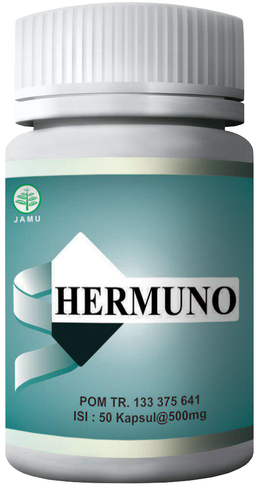
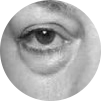

Kualitas dijamin sertifikat dan lisensi
100% bebas efek pencahar dan ketergantungan
7869 ulasan positif
Baca
Hermuno - merasa bebas dan hidup kembali hanya dalam 1 rangkaian pengobatan
Menghilangkan timbunan racun
dari usus besar
dari usus besar
Menghilangkan logam berat, radionuklida dan residu obat beracun
Menghilangkan parasit, yang merajalela karena tidak sehatnya
lingkungan usus
lingkungan usus
Memberikan pada usus prebiotik
alami
alami

kemasan
25 tersisa
Pesan Hermuno
penawaran akan berakhir dalam:
00
:
26
:
47
Harga biasa
{oldPrice} {currency}
Penawaran spesial
{price} {currency}
Menghilangkan timbunan racun
dari usus besar
dari usus besar
Menghilangkan logam berat, radionuklida dan residu obat beracun
Menghilangkan parasit, yang merajalela
karena tidak sehatnya
lingkungan usus
lingkungan usus
Memberikan pada usus prebiotik
alami
alami
12 gejala gangguan usus karena racun - dari mulai kelelahan biasa hingga kanker
Pemeriksaan cepat
Pilih gejala di samping, kemudian klik tombol hasil
12 gejala gangguan pencernaan karena racun - dari mulai kelelahan biasa hingga kanker
Kelelahan, mengantuk, gampang lupa
Berat berlebih, selulit, varises
Sembelit, diare, gas, gatal dubur
Migren dan kecemasan meningkat
Alergi dan sering masuk angin
Penyakit kronis
Nyeri otot dan sendi, kram
Bau keringat tidak enak dan bau mulut

Bengkak, kantung di bawah mata, keriput
Buruknya kualitas rambut, rambut berminyak, ketombe

Suplai darah yang buruk ke kaki dan tangan
Tekanan darah tidak teratur, pusing
1
tingkat
Tingkat pertama keracunan - tubuh tidak memiliki kemampuan untuk membersihkan diri sendiri. Anda merasa lelah di malam hari, Anda merasa lemah dan capek.
Jika masalah ini tidak ditangani, dalam 1-3 bulan, Anda akan mencapai tingkat kedua.
WAJAH ANDA MENGGAMBARKAN TINGKAT KERACUNAN USUS ANDA
Hasil Anda
Tingkat ketiga artinya kemungkinan reaksi alergi. Seperti urtikaria, ruam kulit, serta asma dan rinitis
alergi. Semua itu disebabkan oleh fakta bahwa racun tidak berhasil dihilangkan dari tubuh tetapi
tetap berada di hati dan ginjal.
Jika masalah ini tidak ditangani, dalam 1-3 bulan, Anda akan mencapai tingkat keempat.
Hindari komplikasi, pesan Hermuno sekarang!
3 Tingkat
.png)
.png)

.png)
.png)
.png)
.png)